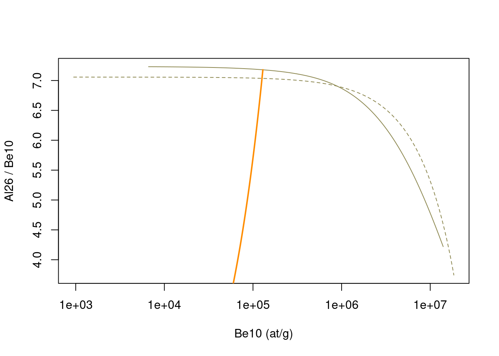

7 Two nuclides systems
We first define the usual variables and parameters.
Code
data(Lambda) # we load a vector containing the attenuation length into the environment
data(prm) # we load a matrix containing the production/decay parameters into the environment
rho = 2.7 # we also define the density (g/cm3)
altitude = 1000 # elevation in m
latitude = 45 # latitude in degrees
P = atm_pressure(alt=altitude,model="stone2000") # compute atmospheric pressure at site
S = scaling_st(P,latitude) # compute the scaling parameters according to Stone (2000)Here first we consider that all samples are close and have similar positions and elevation, so similar scaling parameters. We will see later how to deal with situations where samples have different positions and hence different scaling parameters.
In order to avoid messing up things later we define here once and for all which is nuclide 1 and which is nuclide 2, according to their respective \(\tau_{1/2}\) :
Code
N1 = "Be10" # longer half-life
N2 = "Al26" # shorter half-life7.1 Evolution of ratios
We first start by looking into the evolution of the isotopic ratio between the nuclides, once production has stopped, which is one of the key phenomenon used in burial dating applications.
We will look at the evolution through time (typically over several Ma for the 26/10 system), starting from concentrations defined by a denudation steady-state.
Code
data = data.frame(t = seq(0,7e6,by=2000))
ero = 50 * rho * 100 / 1e6 # in g/cm2/aWe compute the initial steady-state concentrations.
Code
C1_0 = solv_conc_eul(0,ero,Inf,0,prm[,N1],S,Lambda)
C2_0 = solv_conc_eul(0,ero,Inf,0,prm[,N2],S,Lambda)Now we let them decay through time starting from the initial values, with no production (\(z=+\infty\)). We plot the evolution of the ratio through time.
Code
data$C1 = solv_conc_eul(Inf,0,data$t,C1_0,prm[,N1],S,Lambda)
data$C2 = solv_conc_eul(Inf,0,data$t,C2_0,prm[,N2],S,Lambda)
plot(data$t,data$C2/data$C1,type="l",lwd=2,col="darkorange",xlab="Time (a)",ylab=paste(N2,"/",N1))
7.2 Steady-state denudation and constant exposure curves
Two-nuclides plots are usually built around two curves representing the predictions, in terms of concentrations, for end-member simplified situations :
- steady-state denudation, where the concentrations of the nuclides of interest are computed for various values of surface denudation rates
- constant exposure, where the concentrations of the nuclides of interest are computed for various duration of surface exposition, with no denudation
We will use the Eulerian point of view (function solv_conc_eul) to compute the concentrations, which is done by function tnp_curves.
We compute the data for these two curves.
Code
tmp = tnp_curves(prm[,N1],prm[,N2],Lambda,S,rho)
ss_ero = tmp[[1]]
cst_exp = tmp[[2]]The default parameters for the ranges of denudation rates and exposure ages can be adjusted if needed.
Now that we can plot everything in a two-nuclides graph. While not mandatory, it is usually recommended to organize the plot this way :
- X-axis : longer half-life nuclide (our \(N_1\))
- Y-axis : ratio of shorter to longer half-life nuclides (our \(N_2/N_1\))
Code
plot(NA,xlim=range(cst_exp$C1,ss_ero$C1),ylim=range(cst_exp$C2/cst_exp$C1,ss_ero$C2/ss_ero$C1),log="x",
xlab=paste(N1,"(at/g)"),ylab=paste(N2,"/",N1))
lines(cst_exp$C1,cst_exp$C2/cst_exp$C1,lty=2,col="khaki4") # constant exposure, dashed line
lines(ss_ero$C1,ss_ero$C2/ss_ero$C1,col="khaki4") # steady-state erosion, solid line
lines(data$C1,data$C2/data$C1,lwd=2,col="darkorange")
We have also plotted the burial trajectory we generated above. Starting from a position on the steady-state denudation curve, we progressively lower the ratios.
TODO Change the denudation rate used to compute the initial steayd-state concentrations